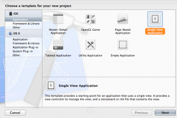
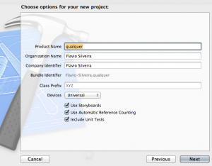
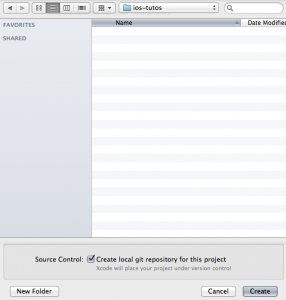
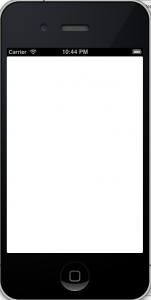

Comece a Programar Para iOS
Sem blá blá blá
Sem muito blá blá blá, quero hoje começar uma pequena série sobre desenvolvimento para iOS. Quero ajudar quem deseja conhecer a tecnologia sem a enrolação que vejo em outros materiais sobre o assunto. Paralelo a isso também consigo me manter estudando o assunto e evoluindo junto com quem acompanha os artigos.
Vou pular toda aquela parte que você já deve ter lido por aí sobre precisar de um Mac, que há outras maneiras de você conseguir instalar o sistema da Apple em um PC Intel comum, que vamos usar o XCode porque ele facilita nossa vida, instalação do XCode, as camadas de desenvolvimento do iOS, etc, etc. Mas é claro, caso venha a necessidade podemos segurar e detalhar um pouco mais o que surgir.
Criando seu primeiro projeto no XCode
Vamos começar com tudo, direto para a prática. Para isso abra o XCode e crie um novo projeto. Vamos criar um projeto do tipo Single view Application, ele já vai nos trazer uma tela inicial e um controller para trabalharmos. Na janela seguinte dê um nome qualquer para seu projeto e no último passo selecione uma pasta para ele.
Acompanhe pelas imagens abaixo:
  Repare que não mudamos nada do que já veio selecionado. Estamos usando tudo como já vem configurado.
{kind=link}
{kind=link}
{kind=link}
Dê uma atenção especial no segundo passo, na opção Devices, onde ficou selecionado Universal, o que significa que estamos desenvolvendo tanto para IPhone quanto para IPad. Teríamos a opção nesse passo de selecionar ou um ou outro se quisessémos.
Estrutura do seu projeto
Certo, vamos dar uma analisada no que o XCode criou para a gente aqui.
No canto esquerdo superior temos o painel project navigator como na imagem abaixo.
Se por qualquer motivo você não estiver visualizando ele, basta ir em View >> Navigators >> Show Project Navigator.
{kind=link}
Vamos ver primeiro a pasta que leva o nome do seu projeto.
Repare que vamos ter extensões de arquivo .h e .m.
Nos arquivos .h temos assinaturas e características e no .m vamos ter as implementações dos métodos. (Se você não entendeu muito bem isso agora não se preocupe, mas lembre-se disso).
O AppDelegate recebe notificações do sistema operacional iOS.
Informações como se seu aplicativo terminou de carregar ou se o usuário fechar seu aplicativo caem nesse arquivo.
O StoryBoard, é a interface gráfica do seu aplicativo.
Lembra da opção Universal quando criamos o projeto?
Por termos optado por universal o XCode preparou para a gente um storyBoard para IPhone e outro para IPad.
No ViewController é onde entraremos com código para fazer as interações com nossa interface gráfica.
Na Pasta Support Files temos alguns arquivos gerais do seu aplicativo, com ícones, imagens e também arquivos com informações do app.
Em seguida você vê a pasta para os testes, dentro dela arquivos que devem ser usados para os testes unitários.
A pasta frameworks serve para armazenar todas as bibliotecas usadas no seu projeto. Você pode expandir ela e reparar que o XCode já adicionou algumas bibliotecas para a gente usar aqui.
E finalmente a pasta products, que vai conter nosso produto final.
Se você pretende colocar seu aplicativo na Apple Store, é daqui que as coisas vão sair.
Compilando seu projeto
É hora de colocar o seu projeto em ação. Para isso vamos compilar ele.
Antes de tudo você deve escolher em qual tipo de device quer ver seu aplicativo.
No canto superior esquerdo do XCode você pode selecionar entre o simulador do IPad (que vem por padrão selecionado) ou o simulador do IPhone, como mostrado na imagem.
{kind=link}
Feito isso, clique no botão Run, o primeiro botão no canto esquerdo do XCode, ou pressione CMD + R. O resultado deve ser como da imagem abaixo.

{kind=link}
Como não escrevemos nenhum código e ainda não colocamos nada em nosso storyboard, temos essa tela em branco.
Vamos descobrir como mudar isso no próximo post.
Abraço!